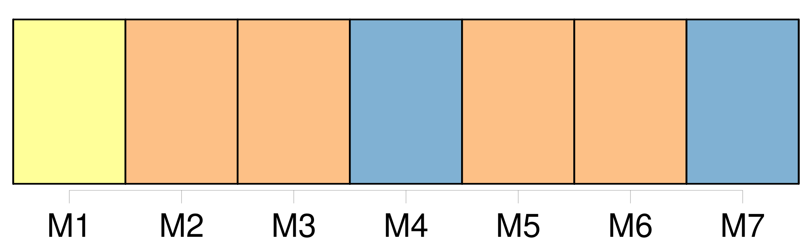
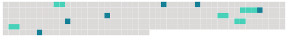

Longueur nb maillons : 11 mentions |
 |
On peut lire les récits des vieux voyageurs : [les cafés] au moins ne changent pas.
Niebhur qui fut en Arabie vers le milieu du XVIIIe siècle [les] décrit : [1 phrases] On ne sert pas d'autres rafraîchissemens dans [ces cabarets orientaux] [qu'] une pipe de tabac à la turque ou à la persane et du caffé sans lait ni sucre. Ainsi on n' [y] a aucune occasion de faire de la dépense ni de s'enyvrer : les Arabes étant aussi sobres dans [ces tavernes] qu'ils l'étoient anciennement lorsqu'ils ne buvaient que de l'eau …… Ils n'aiment pas la promenade et [ils] restent souvent des heures entières à la même place qu'ils ont d'abord prise sans dire un mot à leurs voisins. Ils s'assemblent par centaines dans [ces caffés] J'avoue que j'ai peu fréquenté [ces maisons] [2 phrases]
» |
 |
Il est possible de télécharger la ressource sur la page Ortolang |
Si vous avez des questions ou vous voyez des erreurs, merci d'envoyer un mail à silvia.federzoni89@gmail.com |